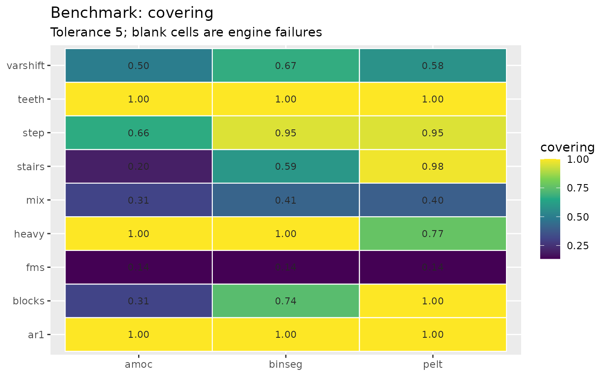

Runs a grid of methods over a collection of labelled series and scores
every cell with cpt_metrics() (or
cpt_metrics_annotated() when a dataset carries several
annotators). An engine that errors on one dataset records the message and
the grid continues.
Usage
cpt_benchmark(
datasets,
methods = c("pelt", "binseg", "wbs"),
metrics = c("covering", "f1"),
tolerance = 5,
change_in = "mean",
parallel = TRUE,
progress = TRUE,
seed = NULL,
...
)
# S3 method for class 'ggcpt_benchmark'
print(x, ...)
# S3 method for class 'ggcpt_benchmark'
tidy(x, ...)
# S3 method for class 'ggcpt_benchmark'
autoplot(
object,
plot_type = c("heatmap", "ranks", "critical_difference"),
metric = NULL,
alpha = 0.05,
...
)Arguments
- datasets
A named list of datasets. Each element is either a plain numeric vector (no ground truth — only descriptive columns are filled) or a list with
seriesand one oftruth,changepoints(an integer vector) orannotations(a list of integer vectors, one per annotator). A list carrying none of those is scoredNAand warns.cpt_datasets()builds a ready-made collection.- methods
Character vector of method names.
- metrics
Which metrics to keep. Defaults to
c("covering", "f1"), the pair van den Burg and Williams (2020) established as the benchmark standard.- tolerance
Matching window passed to the metrics. Defaults to
5.- change_in
Passed to every detector.
- parallel
Use
future::plan()when future.apply is available? Defaults toTRUE.- progress
Show a progressr progress bar when that package is installed and a handler is enabled? Defaults to
TRUE.- seed
Optional seed.
- ...
Additional arguments passed to every
cpt_detect()call.- x
A
ggcpt_benchmarkobject.- object
A
ggcpt_benchmarkobject (forautoplot()).- plot_type
"heatmap"(method by dataset, coloured by the metric),"ranks"(mean rank per method) or"critical_difference"(the Demšar diagram: mean ranks with the Nemenyi critical distance, the standard way this literature says "method A beats method B").- metric
Which metric to plot. Defaults to the first one scored.
- alpha
Level for the critical distance. Defaults to
0.05.
Value
A ggcpt_benchmark object: a tibble with one row per
(dataset, method) — dataset, method, n,
n_cp, the requested metrics, runtime, error — with
print(), tidy() and autoplot()
("heatmap", "ranks", "critical_difference").
References
van den Burg GJJ, Williams CKI (2020). “An evaluation of change point detection algorithms.” arXiv preprint arXiv:2003.06222. doi:10.48550/arXiv.2003.06222 .
Examples
# \donttest{
bm <- cpt_benchmark(cpt_datasets(n = 200, seed = 1),
methods = c("pelt", "binseg", "amoc"),
progress = FALSE)
#> Warning: The number of changepoints identified is Q, it is advised to increase Q to make sure changepoints have not been missed.
#> Warning: The number of changepoints identified is Q, it is advised to increase Q to make sure changepoints have not been missed.
#> Warning: The number of changepoints identified is Q, it is advised to increase Q to make sure changepoints have not been missed.
bm
#> ggcpt_benchmark (9 dataset(s) x 3 method(s), tolerance 5)
#>
#> Mean rank across datasets (1 = best):
#> # A tibble: 3 × 3
#> method mean_rank n_datasets
#> <chr> <dbl> <int>
#> 1 binseg 1.67 9
#> 2 pelt 1.83 9
#> 3 amoc 2.5 9
#>
#> # A tibble: 27 × 4
#> dataset method covering f1
#> <chr> <chr> <dbl> <dbl>
#> 1 blocks pelt 1 1
#> 2 fms pelt 0.135 0
#> 3 mix pelt 0.396 0
#> 4 teeth pelt 1 1
#> 5 stairs pelt 0.980 1
#> 6 step pelt 0.952 1
#> 7 ar1 pelt 1 1
#> 8 heavy pelt 0.77 0.5
#> 9 varshift pelt 0.577 0
#> 10 blocks binseg 0.739 0.625
#> 11 fms binseg 0.135 0
#> 12 mix binseg 0.413 0
#> # ℹ 15 more rows
ggplot2::autoplot(bm)

# }